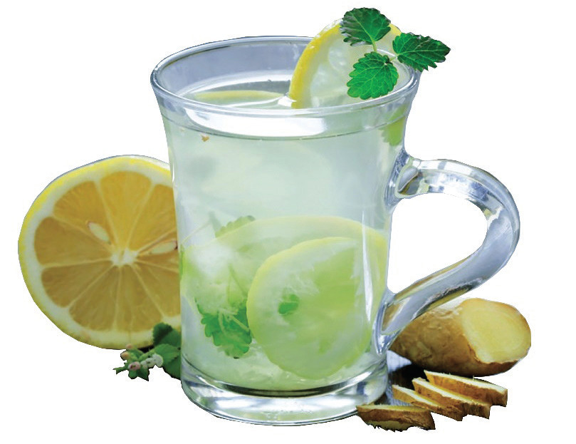

Figure 5.13: shows a mint and ginger lemon drink

Figure 5.13: Mint and ginger lemon drink

Activity 5.11
Identifying ways of preparing mocktail
Watch realiable online videos or read from other sources on various ways of preparing mocktail.
(i) Using the knowledge obtained from these sources, prepare a mocktail of your own choice.
(ii) Assess the quality of the prepared mocktail.

Activity 5. 12
Preparation of a mocktail
Prepare an orange, pineapple and lemonade drink and a mint and ginger lemon drink by following the appropriate method.
(i) List all the ingredients and pieces of equipment used in preparing them.
(ii) Explain the nutritive value of the mocktail you have prepared.
(iii) Explain the importance of utilising a mocktail.
112